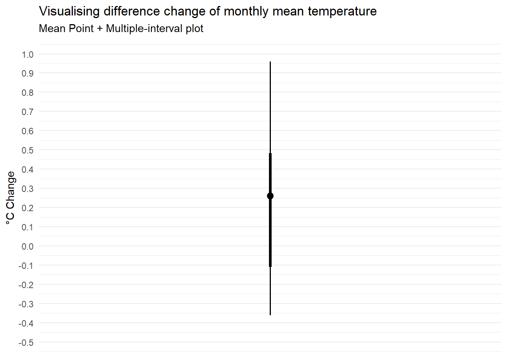

pacman::p_load(tidyverse, ggthemes, CGPfunctions, plotly, ggdist)Take-home_Ex3
1. Overview: Climate Change in Singapore
An increase of daily mean temperature
The temperature difference between wet and dry month is predicted to increase
2. Objective
Using interactive techniques to demonstrate data visualization of monthly temperature in Singapore between year 1983, 1993, 2003, 2013, 2023.
Verify the statement that “daily mean temperature are projected to increase by 1.4 to 4.6” using uncertainty visualization technique.
3. Data Preparation
3.1 Loading R package
Let’s load the libraries and R package needed for this assignment using pacman::p_load() function:
The loaded packages are:
- tidverse: data wrangling, tidying, reading/writing, parsing, and visualizing
3.2 Dataset
The dataset using in this assignment is taking from historical daily temperature or rainfall data in Meteorological service Singapore website.
3.2.1 Import the datasets
In this assignment, we will using data of daily temperature in Changi region from July of 1983, 1993, 2003, 2013, to 2023.
period1<-read_csv("data/DAILYDATA_S24_202307.csv")period2<-read_csv("data/DAILYDATA_S24_201307.csv")period3<-read_csv("data/DAILYDATA_S24_200307.csv")period4<-read_csv("data/DAILYDATA_S24_199307.csv")period5<-read_csv("data/DAILYDATA_S24_198307.csv")3.2.2 Combine the datasets into one
weather <- rbind(period1,period2,period3,period4,period5)4. Visualization Techniques Selection
The current dataset contains five year data from 1983 to 2023, which is a time-series data. It is possible to observe the trend which is the general direction of change in a series of time-series value. Besides, variability is also an important pattern of time-series data, which indicated the average degree of change from one point of time to the next throughout a particular span of time.
Therefore, time-series related visualization techniques will be selected in this assignment. The techniques are as following:
Calendar Heatmaps: calender heatmap visualize time-series data displayed over a conventional calendar year.
Slopegraph: Slopegraphs compare changes usually over time for a list of nouns located on an ordinal or interval scale
Besides, in terms of visualizing uncertainty to validate the claim, ggdist methods will be applied.
5. Data Visualization
5.1 Visualization Using Calendar Heatmap
# change variable name and columns type into factor
weather$Year <- as.factor(weather$Year)
weather$Day <- as.factor(weather$Day)
weather <- weather %>%
mutate(mean_temp = `Mean Temperature (°C)`)# Graphing the calendar heatmap
p <- ggplot(weather,
aes(Day,
Year,
fill = mean_temp)) +
geom_tile(color = "white") +
theme_tufte(base_family = "Helvetica") +
scale_fill_gradient(name = "°C ",
low = "light yellow",
high = "dark red") +
labs(x = NULL,
y = NULL,
title = "Mean Temperture by day and year in month of July") +
theme(axis.ticks = element_blank(),
plot.title = element_text(hjust = 0.5),
legend.title = element_text(size = 8),
legend.text = element_text(size = 6) )
ggplotly(p)In this graph, the depth of the color represent the degree of temperature. In this graph, red means high temperature which means 30 degree and low temperature is represented by yellow. The gradient demonstrated the change of the temperature across different years and different days within one month in that year.
- This graph can help user to identify the change of the temperature with in one month in certain year and also the comparison of same day across different 5 years.
5.2 Visualization Using Cycle Plot
cols <- c("1983" = "blue", "1993" = "green",
"2003" = "pink", "2013" = "red",
"2023" = "orange")
p <- weather %>%
newggslopegraph(Day,mean_temp,Year,
Title = "Temperature change across selected year",
SubTitle = "1961-1980",
LineColor = cols,
DataTextSize = 0) +
theme(panel.background = element_rect(fill="grey",colour="white"),
legend.position = "right")
ggplotly(p)In this graph, different color represent the temperature of different years. The left side represent the start of the month and the right side represent the end of the month.
- This graph can help users to observe the general trend of the temperature change across the year. Besides, this graph also can demonstrate a ranking of the year in terms of degree of the temperature. In this case, when it is the start of the month, 2013 shows the highest temperature which is 28.8, but at end of the month, 2023 shows the highest temperature which is 29.4.
5.3 Assessing uncertainty Using ggdist method
5.3.1 Calculate monthly mean temperature and temperature change for each year
Monthly_Mean <- weather %>%
group_by(Year) %>%
mutate(temp = mean(mean_temp)) %>%
select (Year, Month, temp) %>%
unique() %>%
group_by(Month) %>%
arrange(Year) %>%
mutate(change = temp - lag(temp, default = temp[1]))head(Monthly_Mean)# A tibble: 5 × 4
# Groups: Month [1]
Year Month temp change
<fct> <dbl> <dbl> <dbl>
1 1983 7 27.6 0
2 1993 7 27.9 0.271
3 2003 7 28.1 0.261
4 2013 7 27.8 -0.368
5 2023 7 28.7 0.9745.3.2 Visualizing the temperature change range
Monthly_Mean %>%
ggplot(aes(x = 1,
y = change)) +
stat_pointinterval(
.width= c(0.65,0.99)
) +
labs(
title = "Visualising difference change of monthly mean temperature",
subtitle = "Mean Point + Multiple-interval plot") +
scale_x_continuous(NULL, breaks = NULL) +
scale_y_continuous("°C Change", breaks = seq(-.5,1,0.1), limits = c(-.5,1)) +
theme_minimal()
In this graph, it shows the temperature difference for each year which the range shows from -0.5 °C to 1 °C degree of floating. Besides, the graph shows that the most frequent degree of change mainly fall under around 0.3 °C of change. Therefore, the statement of “Daily mean temperature are projected to increase 1.4 to 4.6” it’s not valid. In this case, the temperature change degree of July in changi across this 5 year its below 1 °C.
6. Conclusion
In conclusion, this assignment demonstrate the temperature change trend over 5 years. It demonstrate an increasing tendency overall. However, degree of the temperature increase it didn’t fulfill the prediction that daily mean temperature is projected to increase by 1.4 to 4.6. In fact, the fluctuation range of temperature only around 0.3-0.9.